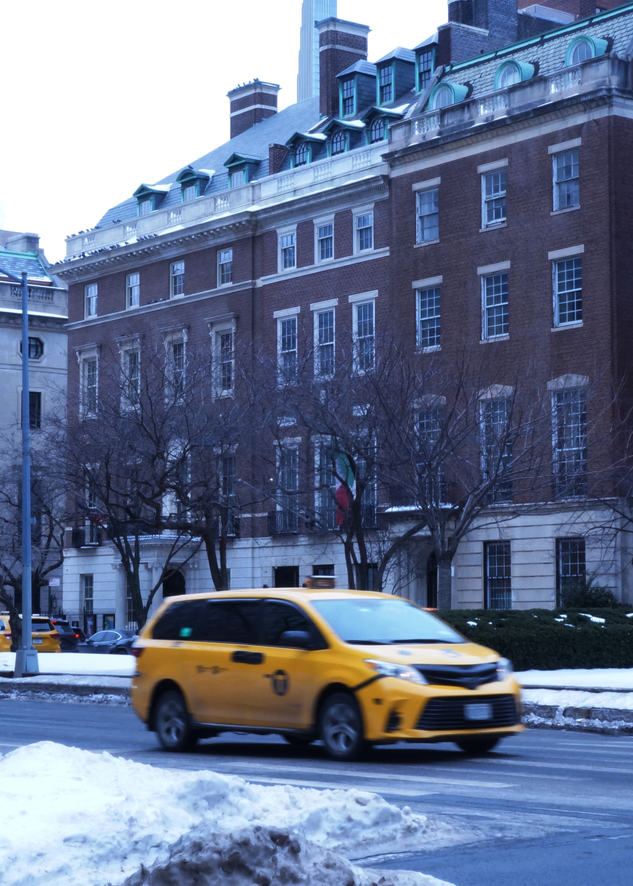

I chose this image I took because it captures a recognisable yet constantly moving moment of New York City life. The bright yellow taxi in the foreground contrasts with the cool winter tones of the snow and brick buildings, immediately drawing the viewer’s attention. In editing, I adjusted the tonal range to deepen the cool blues and greys of the surroundings while enhancing the saturation and brightness of the taxi, allowing it to stand out more dramatically against the subdued cityscape. I also cropped the image to tighten the frame around the taxi, reducing distractions and strengthening the focus on its motion. The motion blur emphasises movement and energy, while the layering of foreground, the snow and the taxi, midground the trees, and background, the building’s details creates depth and reinforces the feeling of capturing a fleeting moment within the city’s rhythm.